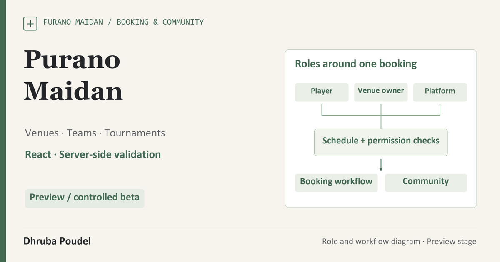

Own product · Booking & community platform
Purano Maidan
A connected platform for finding a ground, organising a team and running a venue.
- Application scope
- Player, organiser, venue-owner and administrator journeys.
- Engineering focus
- Identity, membership, scheduling and coherent state transitions.
- Evidence
- 97 app checks and a separate 33-check core API suite recorded on 28 August 2026.

Connect the venue, the booking and the people around a game.
Purano Maidan is my sports booking and community-platform project. It brings venue discovery, customer bookings, venue operations, teams and tournaments into connected but role-specific workspaces.
The core challenge is consistency across those journeys. A player joining a team, an organiser accepting a request and a venue owner reserving a calendar all need a clear identity and an authorised state transition.
Keep ownership and scheduling rules on the service side.
The React application connects role-aware interfaces to backend and data services. Server-side checks handle account ownership and booking consistency, while the interface makes the next action understandable for customers, organisers, venue owners and administrators.
The source includes separate Node/SQLite and managed-edge deployment paths. Those are implementation options; this case does not imply that every path is accepted in production.
Use account identity, not a display name.
The retained workflow review exposed a membership check that compared a player’s display name. I changed the decision to use the authenticated account ID, so two people with the same name do not become the same member.
I also connected public-team discovery and pending requests to role-scoped queries, repaired a tournament-entry modal path, and made confirmed players visible to the organiser through a private squad handoff.
- Availability to squad
- A player announcement can create a temporary pickup squad; claiming a place respects capacity and exposes the confirmed player to the organiser.
- Team membership
- Public requests have explicit accept/decline decisions. Private invitations use a scoped code rather than a name match.
- Tournament lifecycle
- Venue calendar reservation, team/roster submission and owner confirmation form a related state sequence.
- Wrong role
- An already signed-in person receives correct-workspace guidance instead of an unexplained sign-in loop.
Keep the local acceptance result distinct from the live environment.
- Test context
- The 28 August 2026 UAT record covers a local production build with sample data across player, organiser, venue-owner and administrator journeys.
- Application checks
- 97 application checks were recorded as passing after the documented repairs.
- Core API checks
- A separate 33-check core API suite passed. The two totals are not added together without establishing suite overlap.
- Browser review
- That dated review records no console warnings/errors in the covered journeys and a 390-pixel mobile check.
- Current public surface
- A public preview is available. A rendered homepage is separate from fresh end-to-end acceptance of its account, booking and external-provider paths.
Current delivery stage
Preview / controlled beta. Real merchant/payment acceptance, external message delivery and the current hosted end-to-end journey remain separate milestones. Directory records are not customers, active users or signed partners.
Verify the deployed journey before accepting real bookings.
The next release evidence should repeat an approved synthetic customer-to-owner journey against the selected hosted environment, including a two-browser concurrency check and the resulting durable booking state.
External email, push and payment providers need their own acceptance runs, together with backup/restore ownership and operating guidance. No actual payment, user-growth, customer-adoption or revenue claim is made in this case.